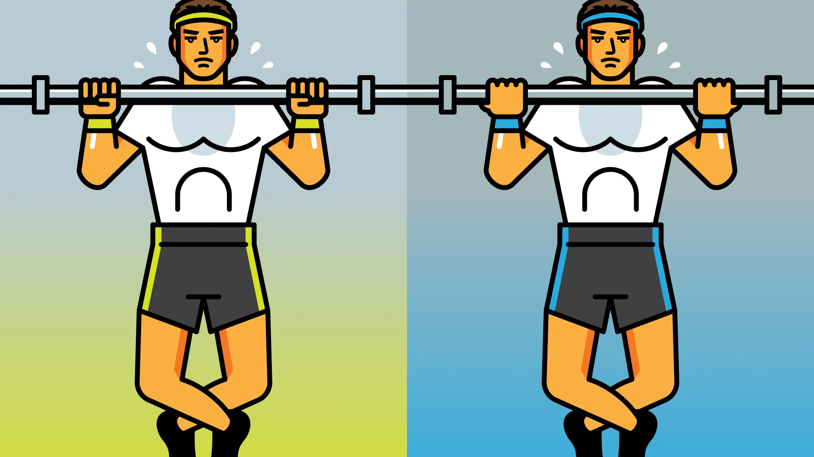
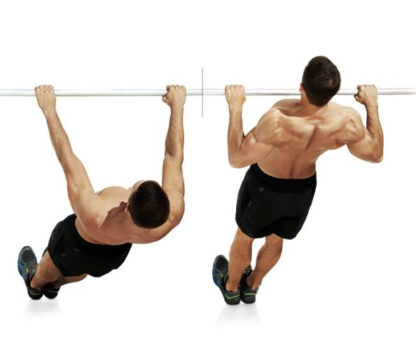
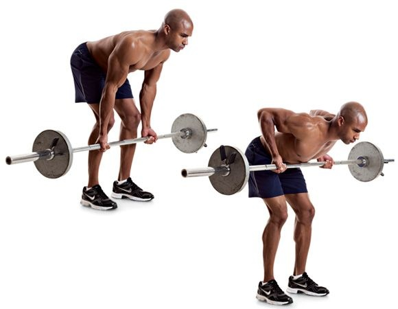
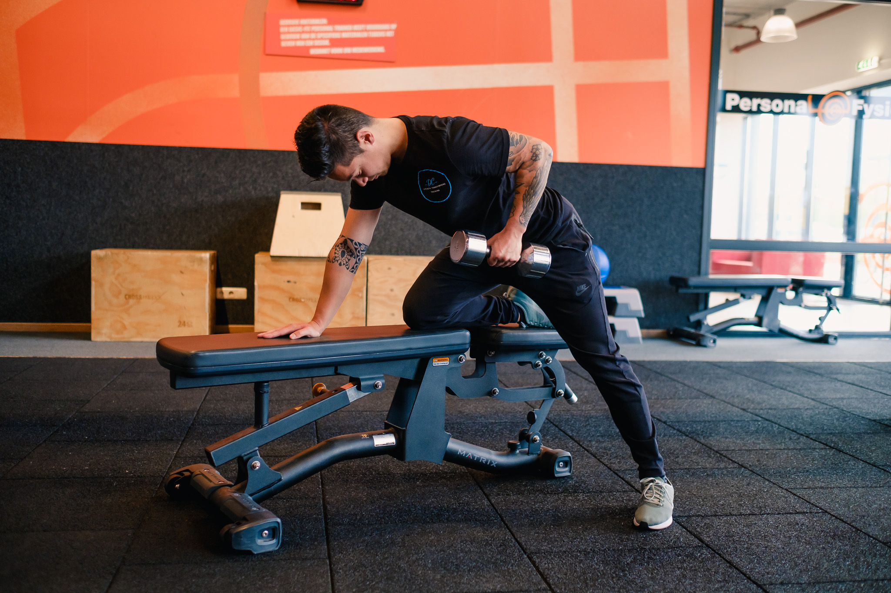

Pull up and chin up
Both the pull up and chin up are extremely useful exercises when aiming to focus on the back muscles. To perform the pull up or chin up, grab the bar with a pronated (pull up) or supinated grip (chin up) and from a “dead hang” position with the elbows extended, pull the torso towards the bar by flexing at the elbow and extending at the shoulder joint. Reverse the movement in a controlled manner. It is highly likely that this will be too challenging for some people due to their body mass and/or lack of experience with the exercise, although there are some exceptions to this. However, there is no shame in not being able to perform an unassisted pull up/chin up. Some gyms will stock an assisted pull up/chin up machine, which allows one to complete the movement without having to lift the entire mass of the trunk and lower body. We would highly recommend the use of these weight assisted machines at the beginning of your training.
Inverted Row
This exercise goes by many different names: inverted row, horizontal row, h-row and the fat man pull up. From here on, it will be referred to exclusively as the inverted row. To perform the inverted row, place a barbell in a power rack at roughly hip height. Make sure that you are facing away from the rack (and therefore pulling the bar towards the rack during the exercise), so that you don’t run the risk of the bar falling off the j-hooks.Assume the position with your feet in front of the barbell and your head behind the bar . Pull your chest up towards the bar . As a general guide, there should be a straight line from the shoulder all the way down to the ankle when viewed from the side.
Bent Over Row
To perform the bent over barbell row, bend down and pick up the loaded barbell with a relatively flat back position. Taking a pronate or supinated grip, pull the barbell up towards the lower ribs/stomach area whilst maintaining a relatively vertical forearm . The exact point that you touch will depend on your grip width (analogous to the bench press).
Dumbbell Row
The trajectory of the arm in the dumbbell row is very similar to that of the inverted row and the barbell row. The main difference with this exercise is that it is generally performed with one arm at a time, whilst the other hand is used for support, either with one leg on a bench or using a dumbbell rack or something similar for support.